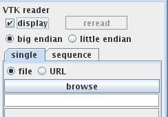
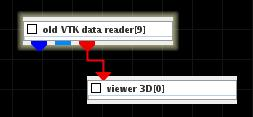

VTK DATA READER
The module reads VTK data files.
Output data
The output field is regular. There is a geometry object of the field.
Computation parameters

To select a single input file click the browse button in the single tab and select a file in the file browser or type the file name into the text input field below the button. A radio button panel defines the source of the input data either from file or URL.
In the sequence tab the user can read in a sequence of files with the same dimensions. To select a series of input files click the browse button and select the files in the file browser.
A radio button panel defines the binary data type as big endian or little endian.
If display check box is on the geometry object is shown in the viewer. To prevent the viewer from displaying it switch the box off before data is read. In order to show the data again press the reread button after switching on the display check box.
Presentation parameters
Presentation tab contents are described in the common interfaces section unter the Presentation Panel entry.
Example

Select the VTK data reader module form the irregular data readers library and move it into the work space. Connect the output port of the geometry object with a viewer module. Select an VTK data file.